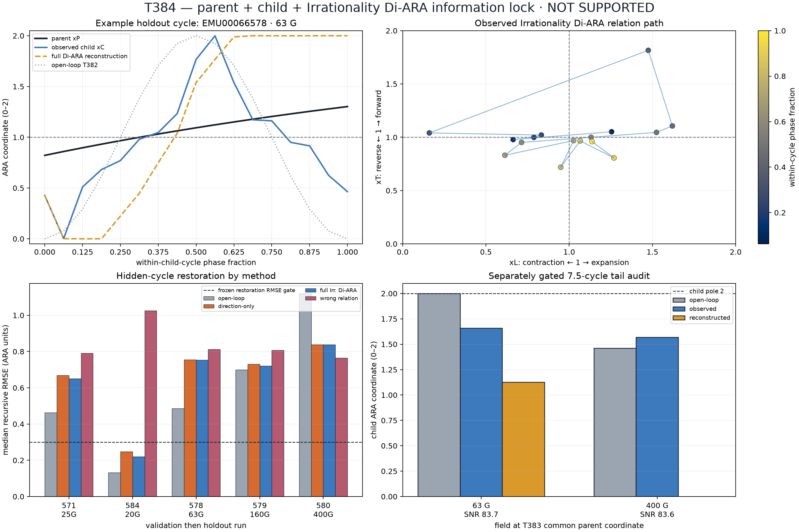

T384 — Irrationality Di-ARA information-lock test
Answer first
IRRATIONALITY_INFORMATION_LOCK_NOT_SUPPORTED
Adding the raw Irrationality Di-ARA path did not satisfy the frozen held-out information-lock gates.
- g1_observed_child_readability: PASS
- g2_local_navigation: FAIL
- g3_wrong_relation: FAIL
- g4_recursive_restoration: FAIL
- g5_information_lock_contribution: FAIL
Exact geometry tested
Parent: xP=2(1−exp(−t/τ)). Observed child: the raw 96-detector pattern projected into the calibration-frozen two-axis child plane. Relation: adjacent parent/child complex ratios mapped to radial xL and turning xT ARA coordinates.
The third coordinate was never defined as 2−parent−child. It had to improve future held-out reconstruction.

Run-level results
| run | split | G | method | one-step RMSE | one-step direction | recursive RMSE | recursive r | recursive direction |
|---|---|---|---|---|---|---|---|---|
| EMU00066571 | validation | 25 | direction_only | 0.4074 | 0.733 | 0.6679 | 0.565 | 0.375 |
| EMU00066571 | validation | 25 | full_irrationality | 0.4080 | 0.667 | 0.6502 | 0.570 | 0.375 |
| EMU00066571 | validation | 25 | open_loop_t382 | 0.4643 | 0.867 | 0.4634 | 0.789 | 0.812 |
| EMU00066571 | validation | 25 | wrong_relation | 0.3879 | 0.667 | 0.7911 | 0.288 | 0.375 |
| EMU00066572 | calibration | 20 | direction_only | 0.1814 | 0.933 | 0.2660 | 0.948 | 0.875 |
| EMU00066572 | calibration | 20 | full_irrationality | 0.1797 | 0.933 | 0.2176 | 0.989 | 0.938 |
| EMU00066572 | calibration | 20 | open_loop_t382 | 0.1588 | 0.933 | 0.1496 | 0.983 | 0.938 |
| EMU00066572 | calibration | 20 | wrong_relation | 0.2158 | 0.933 | 1.0411 | 0.080 | 0.438 |
| EMU00066574 | calibration | 20 | direction_only | 0.1548 | 0.933 | 0.2687 | 0.949 | 0.875 |
| EMU00066574 | calibration | 20 | full_irrationality | 0.1534 | 0.933 | 0.2207 | 0.990 | 0.938 |
| EMU00066574 | calibration | 20 | open_loop_t382 | 0.1562 | 0.933 | 0.1472 | 0.984 | 0.938 |
| EMU00066574 | calibration | 20 | wrong_relation | 0.1898 | 0.933 | 1.0452 | 0.077 | 0.438 |
| EMU00066576 | calibration | 20 | direction_only | 0.1817 | 0.933 | 0.2821 | 0.942 | 0.875 |
| EMU00066576 | calibration | 20 | full_irrationality | 0.1817 | 0.933 | 0.2374 | 0.987 | 0.938 |
| EMU00066576 | calibration | 20 | open_loop_t382 | 0.1698 | 0.933 | 0.1603 | 0.980 | 0.938 |
| EMU00066576 | calibration | 20 | wrong_relation | 0.2249 | 0.933 | 1.0482 | 0.063 | 0.438 |
| EMU00066577 | calibration | 25 | direction_only | 0.4154 | 0.467 | 0.7722 | 0.258 | 0.500 |
| EMU00066577 | calibration | 25 | full_irrationality | 0.4180 | 0.467 | 0.7509 | 0.269 | 0.562 |
| EMU00066577 | calibration | 25 | open_loop_t382 | 0.5298 | 0.667 | 0.5033 | 0.748 | 0.625 |
| EMU00066577 | calibration | 25 | wrong_relation | 0.3901 | 0.467 | 0.8217 | 0.197 | 0.562 |
| EMU00066578 | holdout | 63 | direction_only | 0.5323 | 0.467 | 0.7547 | 0.501 | 0.500 |
| EMU00066578 | holdout | 63 | full_irrationality | 0.5323 | 0.467 | 0.7538 | 0.502 | 0.438 |
| EMU00066578 | holdout | 63 | open_loop_t382 | 0.4955 | 0.733 | 0.4862 | 0.745 | 0.688 |
| EMU00066578 | holdout | 63 | wrong_relation | 0.4574 | 0.467 | 0.8128 | 0.476 | 0.500 |
| EMU00066579 | holdout | 160 | direction_only | 0.4966 | 0.400 | 0.7299 | 0.110 | 0.500 |
| EMU00066579 | holdout | 160 | full_irrationality | 0.4960 | 0.400 | 0.7214 | 0.109 | 0.500 |
| EMU00066579 | holdout | 160 | open_loop_t382 | 0.6810 | 0.533 | 0.6996 | 0.385 | 0.562 |
| EMU00066579 | holdout | 160 | wrong_relation | 0.4472 | 0.467 | 0.8073 | 0.287 | 0.625 |
| EMU00066580 | holdout | 400 | direction_only | 0.3997 | 0.667 | 0.8378 | 0.470 | 0.688 |
| EMU00066580 | holdout | 400 | full_irrationality | 0.4003 | 0.667 | 0.8378 | 0.470 | 0.688 |
| EMU00066580 | holdout | 400 | open_loop_t382 | 1.0050 | 0.467 | 1.1205 | -0.303 | 0.375 |
| EMU00066580 | holdout | 400 | wrong_relation | 0.4036 | 0.667 | 0.7647 | 0.499 | 0.750 |
| EMU00066584 | validation | 20 | direction_only | 0.1682 | 0.933 | 0.2485 | 0.957 | 0.875 |
| EMU00066584 | validation | 20 | full_irrationality | 0.1674 | 0.933 | 0.2202 | 0.991 | 0.938 |
| EMU00066584 | validation | 20 | open_loop_t382 | 0.1400 | 0.933 | 0.1323 | 0.987 | 0.938 |
| EMU00066584 | validation | 20 | wrong_relation | 0.2049 | 0.933 | 1.0255 | 0.096 | 0.438 |
7.5-cycle tail audit
| G | time μs | SNR | admissible | open-loop xC | observed xC | reconstructed xC |
|---|---|---|---|---|---|---|
| 63 | 8.6258 | 83.678 | yes | 2.0000 | 1.6590 | 1.1264 |
| 160 | 8.6258 | 83.875 | no | 0.0780 | — | — |
| 400 | 8.6258 | 83.633 | yes | 1.4627 | 1.5703 | 0.0000 |
Boundary
This source can test population-scale detector-pattern navigation. It contains no directly linked individual muon, charged daughter and neutrino record, so it cannot establish event-level neutrino timing.
Reproduce
Run analysis/muon/t384_irrationality_information_lock.py. Frozen protocol: T384_IRRATIONALITY_INFORMATION_LOCK_PROTOCOL_2026-08-15.md.